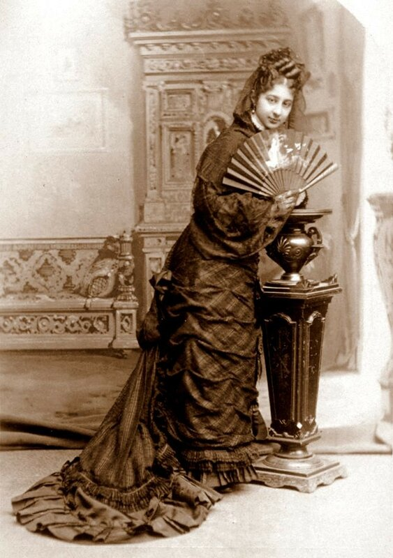
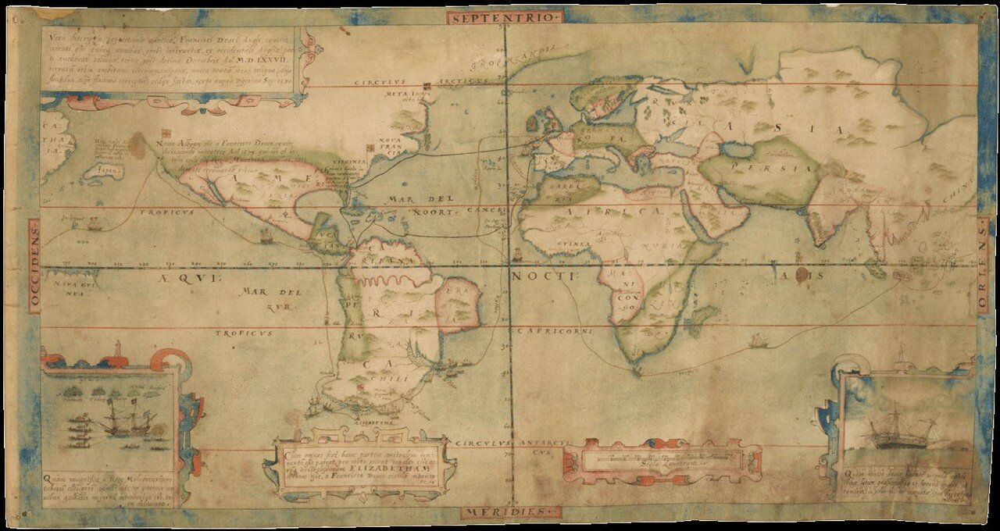
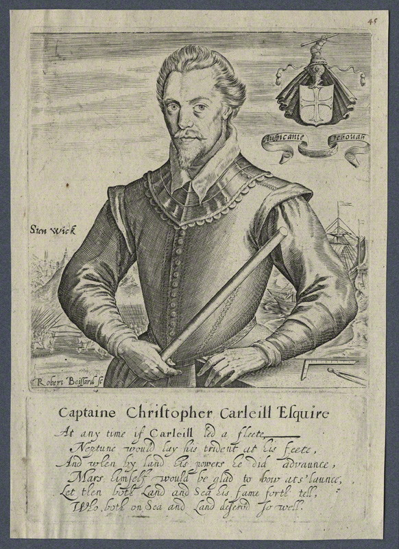
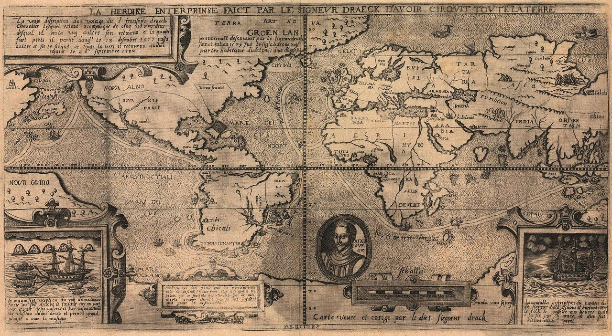
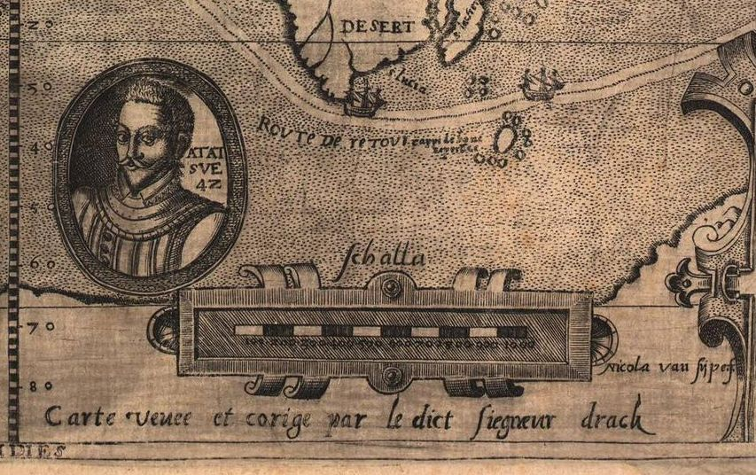

«В юности моей, во время оно» мне очень нравились устные рассказы известного литературоведа Ираклия Андроникова и его книги о поисках новых документов по истории литературы. Интерес подогревался еще и тем, что моя жена работала в Главной Геофизической обсерватории на Кушелевке в Ленинграде вместе с сестрой Андроникова, поэтому нельзя было пропустить ни одного появления «близкого знакомого» на экране телевизора или на страницах многочисленных литературных журналов того времени. После каждой встречи с новой работой Андроникова хотелось тут же бежать на чердак или в подвал, или перебирать хлам у старьевщиков на провинциальных толкучих рынках, где без всякого сомнения найдутся утраченные шедевры.
Примерно такие же чувства я испытал после чтения работ историка и археолога Зелии Наттолл (Zelia Nuttall, 1857-1933).

Вообще-то круг ее научных интересов охватывает доколумбову историю Мексики, но, как всякому энтузиасту своего дела, ей улыбнулась удача совсем в другой области и она натолкнулась в архивах Мексики на дотоле неизвестные документы о кругосветном плавании Дрейка. Продолжив поиски бумаг экспедиции Дрейка в США, Англии, Испании, Франции и Италии, систематизировав и обработав найденные документы, Наттолл выпустила в издательстве Хаклюйта книгу New Light on Drake: Documents Relating to his Voyage of Circumnavigation 1577-1580. (London: Hakluyt Society, 1914). Таким образом увидели свет журнал экпедиции, который вел португальский навигатор Нуньо да Сильва, пленник на корабле Дрейка, его же свидетельства, данные суду Инквизиции под клятвой, копии редких карт, которые «видел и корректировал» лично Дрейк и другие не менее интересные документы.
Вспомним, что ни одного подлинного документа, которые вел Дрейк во время кругосветного плавания, не сохранилось. Известный немецкий географ И.Г. Коль (J. G. Kohl) считает, что это явилось следствием инструкций, данных Дрейку перед отплытием. Сами эти инструкции тоже не сохранились, зато до нас дошли аналогичные приказы, отданные Тайным Советом Англии перед отплытием экспедиции М.Фентона два года спустя после плавания Дрейка. Один из пунктов этих указаний звучит так:
«18. item you shall give straight order to restraine that none shall make any charts or description of the said voyage but such as shall be deputed by you the Generall ; which said charts and description we think meete that you, the Generall shall take into your hands at your returne to this our coast of England leaving with them no copee and to present them unto us at your return, the like to be done if they find any charts or maps in this country.»
Вы должны отдать строгий приказ, содержащий запрет любому лицу изготавливать карты или описания похода, кроме тех, что поручены Генералом; все такие карты и описания вы, Генерал, к моменту вашего возвращеия к берегам Англии должны держать в своих руках, не изготавливать с них никаких копий, а передать их нам после возвращения. Так же следует поступить с любыми картами и планами, если они будут найдены в других странах.
J. G. Kohl Descriptive Catalogue of those Charts and surveys relating to America, Washington, 1857, стр. 79-80
Но ирония судьбы заключается в том, что Дрейк, выполнив свои обязательства и передав все отчеты о плавании королеве, перед историей оказался беззащитным: о всех перипетиях кругосветной экспедиции мир узнал не от самого Дрейка, а по рассказам не самых лучших его спутников – Джона Кука и Фрэнсиса Флетчера. О последнем у Дрейка было весьма нелестное мнение, он наказывал его во время путешествия за упущения и характеризовал как " the falsest knave that liveth" – «самый притворный плут из живущих на земле». Что касается Джона Кука, то тот находился на борту «Elizabeth» под командованием Винтера, капитана, который покинул экпедицию после шторма у Магелланова пролива и вернулся в Англию. Кук стремился очернить Дрейка из-за казни Даути, с которым он был дружен.
Примерно такая же история случилась и с картой экспедиции. Мы уже говорили, что подлинная карта экспедиции, висевшая во дворце Уайтхолл, скорее всего сгорела в пожаре 1698 года. Стараниями дотошных историков, включая и нашу сегодняшнюю гостью Наттолл, к «прижизненным», так сказать, копиям карты Дрейка можно отнести три экземпляра. Ближе всего к подлиннику находится карта, которую назвают картой Дрейка-Меллона (Меллон –известный английский коллекционер). Это небольшая (размерами всего 24х45 см) рукописная карта, легенда на которой, относящаяся к южной оконечности Америки, по своему содержанию почти слово в слово повторяет текст, записанный Сэмюэлом Перчесом, человеком, видевшим подлинную карту в 1625 году (см. наш пост здесь).

Карта Дрейка-Меллона. К сожалению, хранители карты в Йеле не дают ее более качественного изображения.
Карта исполнена на пергаменте пером и раскрашена вручную. Авторство с достоверностью не установлено. Сотрудники Йельского Центра британского искусства, где находится карта, считают, что исполнить эту карту мог Баттиста Боацио, известный в то время итальянский рисовальщик и картограф (расцвет творчества приходится на 1588 – 1606 гг.), долгое время работавший в Англии. Он сопровождал в походах известного английского военного и морского деятеля Кристофера Карлейля, участника многих битв того времени. Именно Карлейль переправлял в 1582 году английских купцов в Россию, когда обострился ее конфликт с датским королем Фредериком II.

Капитан Кристофер Карлейль (Christopher Carleill), гравюра Robert Boissard (ок.1593-1603)
Вероятность авторства Баттисты Боацио возрастает с учетом того, что он служил рисовальщиком и картографом у Дрейка во время экспедиции в Вест-Индию в 1585-1586 гг.
Название карты приведено в ее левом верхнем углу:
"Vera descriptio expeditionis nauticae, Francisco Draci Angli, cognitis aurati, qui quinqué décimo Decembris An M.D.LXXVII, tcrraru[m] orbis amibitum circumnavigans, unica tantu[m] naui rcliqua (alijs fluctibus, alijs Hamina correptis} redux factus, sexto supra Vegesimo Sep. 1580."
Истинное описание морской экспедиции Фрэнсиса Дрейка, англичанина, рыцаря, который 13 декабря 1577 года, отправившись от западной части Англии с пятью кораблями, обогнул Земной шар. В Англию 16 сентября 1580 года вернулся только один корабль, остальные же были разрушены морем или огнем.
На карте показан маршрут экспедиции Дрейка 1577-1580 гг. Южная оконечность Америки обозначена как "Elizabetha". А северо-западная часть Америки, включая северную часть Калифорнии, обозначена как «Noua Albyon». Большая часть Северной Америки отнесена к английским владениям (их границы подсвечены зеленым цветом в то время как Nova Hispania окрашена в розово-палевый – испанский – цвет).
На двух вставках в левом и правом нижних углах показаны два происшествия, имевшие место во премя кругосветного плавания. Левая вставка показывает буксировку корабля Дрейка в порт на острове Тернате (Молуккские острова), где Дрейк провел удачную сделку с местным султаном на большую партию гвоздики. На правой вставке показана Золотая Лань, наскочившая на рифы у острова Сулавеси.
По центру карты сверху вниз проходит линия широт, а слева направо – линия долгот. Масштаб – примерно 425 лиг в одном дюйме.
Тот факт, что на карте изображен не только маршрут кругосветного плавания Дрейка, но и маршруты его экспедиции в Вест-Индию 1585-86 гг. показывает, что карта изготовлена не ранее 1586-87 гг. Вторым доказательством этого может служить наличие на карте флага Св. Георгия не только на месте острова Елизаветы и в Новом Альбионе, но и на территории Колонии Виргиния, впервые основанной Уолтером Рэли в 1585 году. (Четвертый флаг помещен у Meta Incognita на острове Баффинова Земля, акт о владеиии которым провозглашен экспедицией Фробишера в 1576 году).
Помимо этой рукописной карты на роль копий, сделаных с оригинала Дрейка претендуют две гравированные карты. Более ранняя из них озаглавлена "La Herdike [Heroikc] Enterprinse faict par le signeur Draeck",

Она несет имя гравера "Nicola van Sype f."

Маршрут экспедиции Дрейка на карте показан довольно точно, острова архипелага Огненная Земля обозначены, ниже острова Insula Elizabethae изображен королевский герб. Текст помещенной рядом легенды является переводом на французский текста с карты Дрейка-Меллона. Совпадают и многие другие элементы карт. Однако есть и существенное различие. На карте Ван Сайпа помещен в овале портрет Дрейка в возрасте, как написано, 42 лет. Если считать, что Дрейк родился в 1540 или 1541 году, то гравировка карты должна относиться к 1582-83 гг. или позже. Надпись рядом с портретом указывает, что карту «видел и корректировал» сам Дрейк (("veuee at corige par le diсt siegneur drack"); эта надпись, видимо, скопирована с оригинала.
Продолжим рассказ в следующий раз.